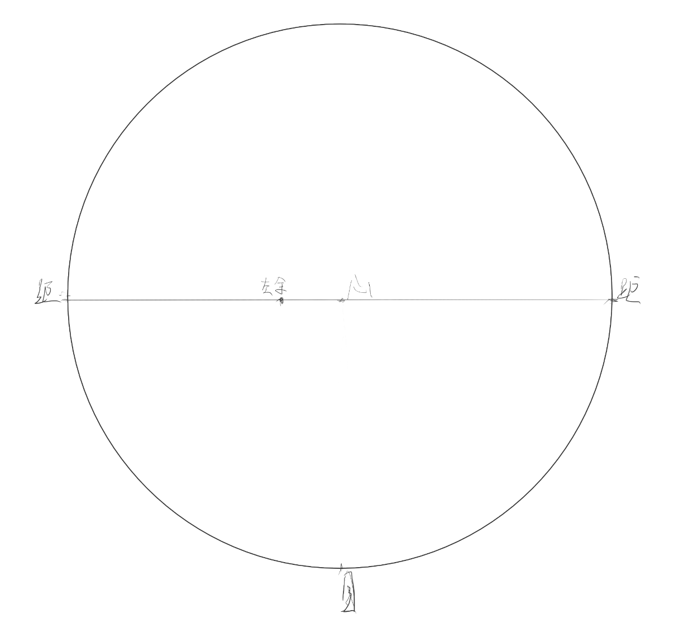
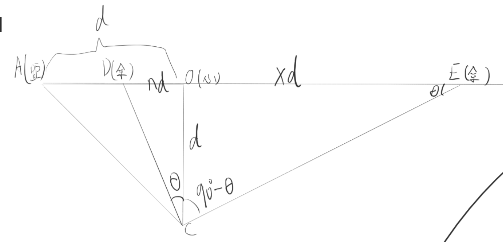

透视复习——绘制任意角度两点透视立方体
和上次学透视已经间隔半个月了，现在“项目”进展缓慢，这里得重新实操一下之前学过的东西，加深一下印象，避免自己忘掉了。
要绘制一个任意角度的两点透视的正方体，大概是如下步骤：
- 定出 90 度视圈，定出正方体的近余点
- 通过辅助线法定出远余点
- 通过公式法、反比法定出两余点的测点
- 定出正方体最近的垂直原线，绘制其它边
- 进行检讨：
- 如果在 53 度视圈下，我该怎么操作？
- 对各种旋转角度的立方体，有何取巧办法？（测点法的取巧办法是比较重要的——人又看不出来我画的是不是完美的正方体，我只要能骗过观众就行）
- 倘若我真的使用了取巧方法，我会引入多少误差？
TODO 遗憾的是，关于取巧办法，我目前还没什么头绪，等实际操作，有了一定经验的时候再做记录吧。这里的要点是，要明确，在哪些地方引入偏差是能够不很大地影响画面的效果的。
实际上，在这里也更清晰地定义了一些之前没有明确给出的公式。
分解
规定了视圈，就是规定了心点，距点，焦距。但很多时候并非是先定视圈再定画面的，而是先画草图再定视圈，如果有什么东西最先定的，那东西一般来说是视平线和心点。

定出了视圈，再定出离心点近的这个余点。
余点和度数的对应关系是？
视平线上的任何灭点，所有引向该灭点的平变线，平行于目点向该点的方向。可以说，定出了灭点，就是定出了相应平变线到视中线的角度，反之亦然。
那么，余点的位置和这个角度的对应关系是？这是一个平面几何问题，其中我们的一切比例，都以心距为基础：

上面定心距为 d，心余为 nd，对应的角度是 $\theta$，明显这里有：
即有：
这里，就定出了余点和度数的对应关系。
这里我们看看 1/2 距心对应的是什么角度：
这就是为什么我们把 1/2 距心为半径围成的圆称作 53 度视圈——$26.5^\circ \times 2=53^\circ$。
从一个余点定出另一个余点
立方体的一条边指向该余点时，怎么得到另一条边指向的另一个余点？我们知道，这两条边垂直，也就是说，对一个余点，我们如何定出“和它垂直”的另一个余点？
仍旧复用上面的这张图：

令另一个余点到心点的距离为 xd，根据图中，我们知道：
我们已知 $\tan \theta = n$，因此这里得到：
也就是说，当一个余点距心点的距离为 nd 时，另一个余点距心点的距离为 $\frac{1}{n}d$。
其实在这里我才第一次给出这个形式化的定义，hhh，在这之前我都时用文字描述的，或者得到一个 $xy=d^2$。
使用辅助线法画远余点
但是，现在问题在于，远余点太远了，我们不想画。
我们现在已经知道两个余点和心点的距离的关系，我们可以使用三角形相似，去放缩这个关系。
我们在画面上任意做出一条线段平行于视平线，然后对这个线段取出 n 和 1/n 两部分，其中 n 的部分要在右侧。
要画这个图，必须得得到 n 的大小（不然没法画），这里定 n 为 0.4，则两部分长度分别为 0.4 和 2.5，即 1：6.25，1 的部分在右。
这个如何简化呢？我们可以先定出长的一段，然后不断二分找到短的那段的大小，然后将长的这一段延伸一下，比如随便画一个线段，然后对它进行六分，把这个线段延长稍小于 1/6 的长度。
然后，连接心点到线段的分割点，连接线段的右端点到左余点，连接左端点和两个线的交点，这根线指向另一个余点。

我们得到了这根线，然后沿这两个点做垂直原线，我们知道，这两根垂直原线和视平线的交点组成的线段，也是一个指向该灭点的变线。我们等分这两根垂直原线，然后连接各对等分点，就能得到更多指向该灭点的平变线。这就是辅助线法，建立一个网格。

在这一步时，我们已经能画出旋转这个角度的立方体了，但正方体呢？还需要测点。
公式法定余点测点
余点怎么定测点？我们知道是目余做圆弧找和视平线的交点。

定目心距离为 nd，测心为 xd，有：
化简得到：
上面的公式是以心距为基准的，但如果以心余为基准呢？这里不给心余为基准的公式，因为以它为基准并不好用。
这个公式的优良之处在于它的值域总在 0-1 之间，这让它有实践意义。我们知道，对立方体，总是一个余点在 90 度视圈内，一个在外；如果要处理的余点太远，我们就先找到视圈内的余点，找到它的 n，再取这个 n 的倒数，丢给这个函数，bingo。
这里绘制一下这个函数的图像：

这个图像看上去 n 从 0-1 时是线性的，但如果真的以线性看待这一段会引入无法忽视的误差，所以别管它了，直接使用这个公式，按计算器就按计算器吧！
绘制正方体
上面已经把所有点都做出来了，剩下的工作就是去画垂直原线，开画就是了。

并不有趣。注意到这里的测点——即使把心点当测点，这里又会引入多少误差呢？没多少！这还是 90 度视圈下接近边缘时的情况呢！
检讨
53 度视圈？
使用 53 度视圈其实也是分几种情况的——典型的话是对角线 53 度和最长或最短边 53 度……
说到底，实际操作的时候这样太麻烦了，不如画“小稿”，把大的结构操作完后直接放大后再画细节。
这里不想太多——我不关心是怎么个 53 度，我只关心定 1/2 距点的位置，实操的时候见招拆招。也就是说，这里和 90 度视圈的区别在于，90 度视圈定目点和距点，53 度视圈定 1/2 目和 1/2 距。
现在我们定出来 1/2 距，1/2 目，以及一个余点。
余点和度数的对应关系？
定 1/2 距心为 d（！后面的 d 全是 1/2 距心！），余心为 nd，则有：

这个其实不重要 w
从一个余点定出另一个余点
还是一样的：

辅助线法定远余点
这个就不操作了……只需要知道我们操作的时候要取 $n : \frac{4}{n}$ 的比例。
公式法定余点测点

对比 90 度视圈和 53 度视圈的公式
90 度视圈时，n 为余心：距心，53 度视圈时，n 为余心：1/2 距心。
余点对应度数：
另一个余点：
测点：
立方体就不画了，现在手头没有数位板。
各种角度的余角透视
书中把不同角度的余角透视归纳成三类——微动，对等和一般（其实平行透视也可以算成一类）。
但先定一下术语，方体旋转过程中，有的面会和画面更加平行，有的面会和画面更加垂直，和画面相对平行的面称为“正”，相对垂直的称为“侧”。显然，正面的余点离得远，正面看上去宽；侧面的余点离得近，侧面看上去窄。（当然，这里说的是通常情况，举一个极端例子，假设现在的视圈超级大，接近 180 度，一个放在很侧面的立方体，此时余点近的面反而更宽；但我们不考虑极端例子）
假设方体从正对我们开始旋转，到另一个相邻侧面正对我们结束，即旋转 90 度。

平行透视
方体旋转开始时，是平行透视；此时正面平行于画面，侧面垂直于画面。此时正面没有余点，侧面的余点和心点重合。
微动状态
旋转刚开始和临近结束时称是微动状态。微动状态下，两个侧面的角度相差是很远的，经常是一个余点在画框之内（可以认为是小于等于 1/2 距心？），另一个在相反方向较远处。比如，一个余点在 53 度视圈内（小于 1/2 距心）时，另一个余点的距离必定会大于 2 倍的距心。
微动状态下，两个侧面角度相差很远，所以透视压缩程度也悬殊，正面很宽，侧面很窄；可以说微动状态是最难画的，但同时也是看上去最有趣的（就像人的侧面像？）。
还记得吗？立方体必定一个余点在距心内，一个余点必定在距心外；一个余点越接近心点，另一个余点就越远离心点（而且远离的速度会越来越快）。
对等状态
这里先提对等状态——旋转进行到一半，即旋转 45 度时，称为对等状态，此时两个侧面和画面均成 45 度角，两个余点和两个距点重合。
一般状态
一般状态就是微动和对等之间的状态。在一般状态下，相对正的面的余点在距心外不远处，相对侧的面的余点在距心内离距点较近的部分。一般状态下，两个侧面和画面的角度相近，因此透视压缩程度也相近。
如何活用？
这里要记住——随意从图像中截取出一个立方体，是无法直接知晓它是微动、一般或是对等状态的——我不知道当前的心点、距点的位置，因此不知道它实际的角度。
或许可以尝试认为，一般状态是对等状态微调的结果，微动状态是平行透视微调的结果。
一般状态来自对等状态，因此它们的余点都会在距点左右，参差不会大。
微动状态来自于平行透视，因此它们一个余点会接近心点，一个余点会非常远。
这里可以尝试机械地认为：
旋转角度为 $0^\circ$ 到 $26.5^\circ$ 时，认为是微动状态，此时两余点距离比例为 $1:无穷$ 到 $1:4$。
从 $26.5^\circ$ 到 $45^\circ$ 时，认为是一般状态，此时两余点距离比例为 $1:4$ 到 $1:1$。
但这个认为有啥意义吗？好像没有。
本博客所有文章除特别声明外，均采用 CC BY-NC-SA 4.0 协议 ，转载请注明出处！